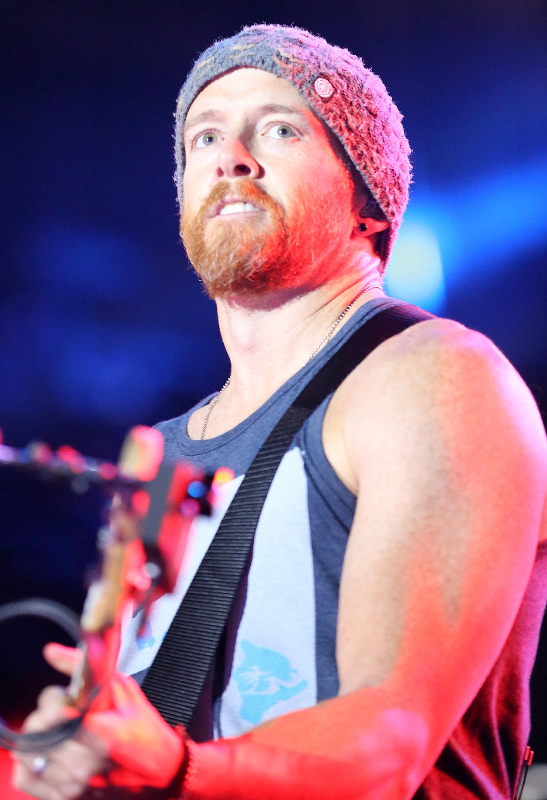

|
Dave Farrell: A Journey Through His Life and Career  |
||
|
Early Life David Michael Farrell, known by his stage name Phoenix, was born on February 8, 1977, in Plymouth, Massachusetts. Dave grew up in Mission Viejo, California, where he developed an interest in music at an early age. He began learning to play various instruments, including the guitar and violin, but ultimately found his passion in playing the bass guitar. His dedication to music grew throughout his teenage years, influenced by bands like Red Hot Chili Peppers and Metallica. Education and Early Music Career Dave Farrell attended the University of California, Los Angeles (UCLA), where he studied alongside his future bandmates. Before joining Linkin Park, Dave was a member of a Christian punk band called Tasty Snax (later renamed The Snax), where he played bass guitar. His experience with The Snax helped him refine his musical skills and prepare for his eventual role in Linkin Park. Joining Linkin Park Dave Farrell initially became involved with Linkin Park during the recording of their debut album, "Hybrid Theory," though he did not play on the album as he was still committed to The Snax at the time. However, after the album's release in 2000, he officially joined Linkin Park as their bassist and became an integral part of the band's lineup. His return to the band marked the completion of the classic Linkin Park lineup, solidifying their sound and stage presence.
Career with Linkin Park Dave Farrell's contributions to Linkin Park extend beyond his bass playing. Known for his energetic performances and tight grooves, Dave has helped define the band's rhythmic foundation. His musical versatility and ability to blend different styles have been essential to the band's evolution. Throughout his career with Linkin Park, Dave has been involved in the production of several albums and has contributed to the band's songwriting process.
Personal Life Dave Farrell is married to Linsey Farrell, and the couple has two daughters. Dave is known for his down-to-earth personality and strong family values. Outside of music, he enjoys spending time with his family and is an avid sports fan, particularly of soccer and basketball. Despite the demands of his career, Dave remains grounded and dedicated to his personal life. Philanthropy and Other Interests Like his bandmates, Dave Farrell is deeply committed to philanthropy. He has been actively involved in the band's charity organization, Music for Relief, which supports disaster relief and environmental causes. Dave's passion for helping others is reflected in his charitable work, as well as his support for various community initiatives. Legacy and Impact As the bassist for Linkin Park, Dave Farrell has played a crucial role in the band's success and influence in the music industry. His solid bass lines and creative input have helped shape the band's sound, making him an essential member of Linkin Park. Dave's contributions to music and his commitment to philanthropy continue to inspire fans and musicians around the world. |